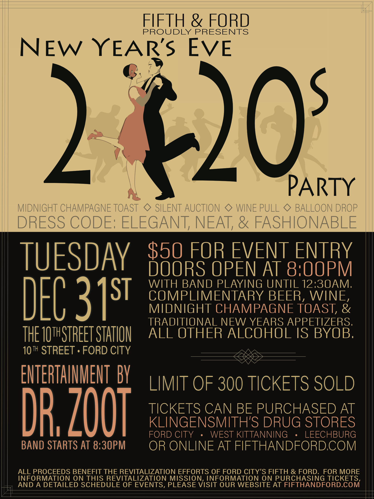

JOIN US FOR NEW YEAR'S EVE 2020!
A fundraiser to support development of "Fifth & Ford."

Ring in the new roaring '20s with us at the 10th Street Station in Ford City, PA. Doors open at 8:00 pm with the amazing Dr. Zoot playing until 12:30 am.
"What can I expect at the party?" Complimentary beer, wine, and a midnight champagne toast along with traditional New Year's Eve appetizers! All other alcohol is BYOB. Pop and assorted mixers will be provided. We will also have a balloon drop, wine pull, silent auction, and more!
"Where can I get tickets?" Tickets are available for purchase at Klingensmith's Drug Stores in Ford City, West Kittanning, and Leechburg ($50 per ticket). Only 300 tickets will be available for purchase. They can also be purchased on our Facebook page (at this link) or at Eventbrite (at this link) ($50 + online fees for single tickets). We are also offering the chance for businesses and individuals to sponsor tables at the event! Each sponsored table includes 8 individual tickets, a reserved table, and prominent thanks as a sponsor of the event! Each sponsored table is $500. Please contact us at Admin@FifthAndFord.com if you are interested in sponsoring a table.